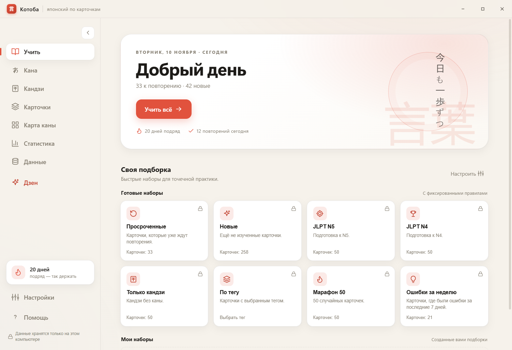
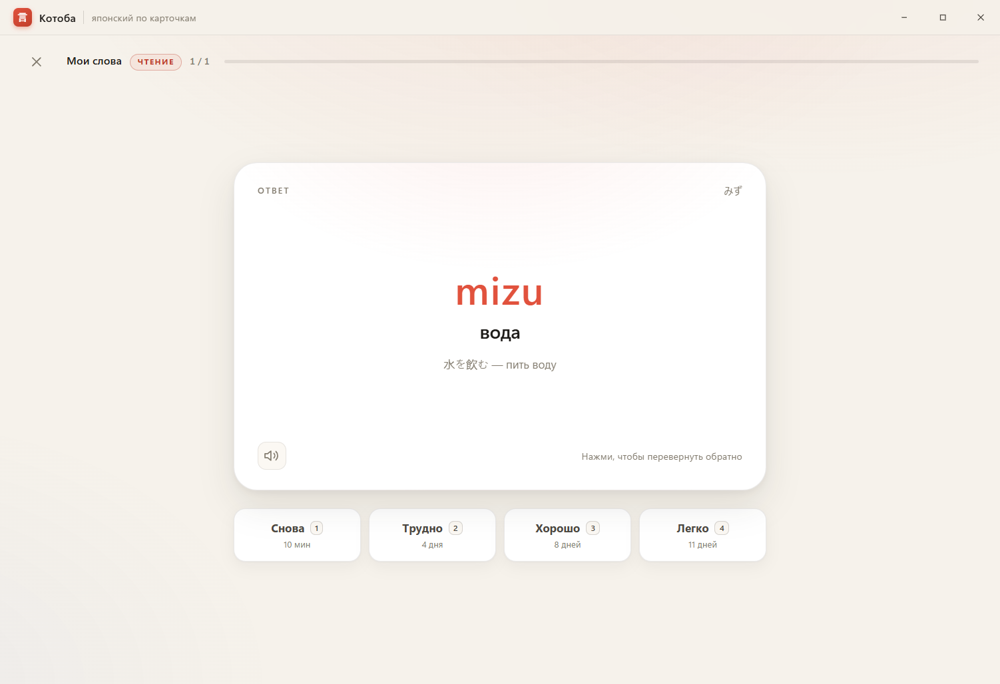
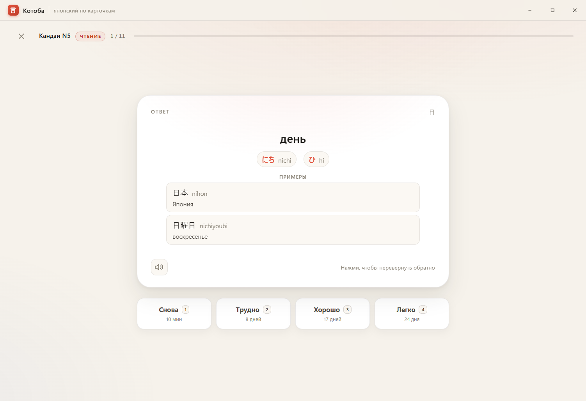
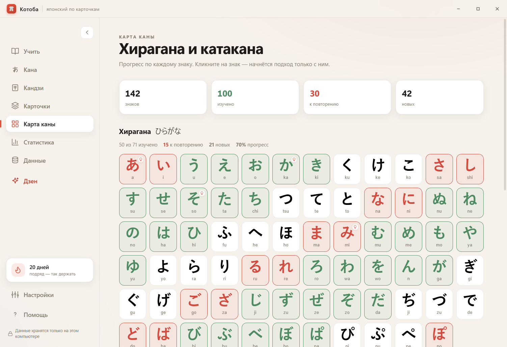
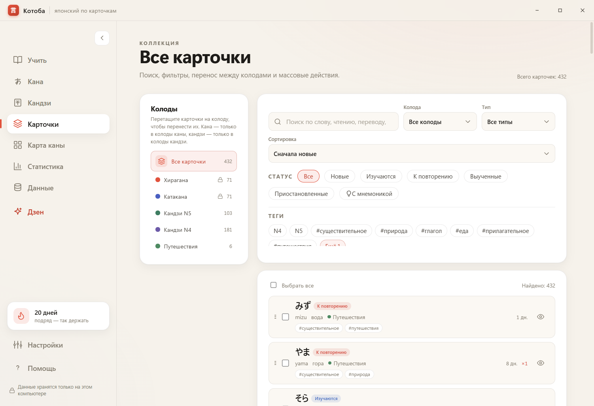
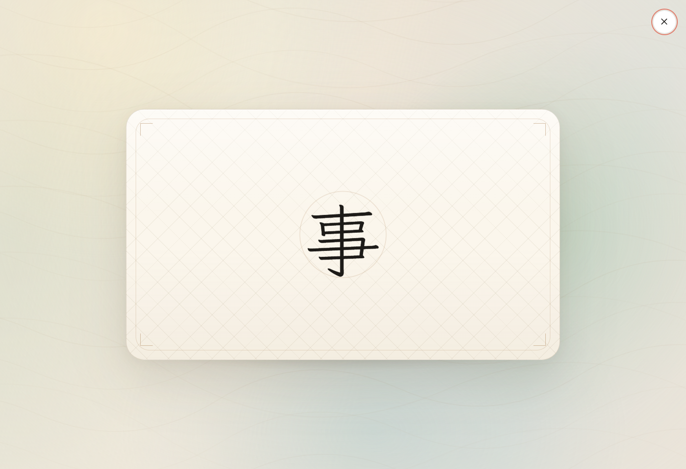
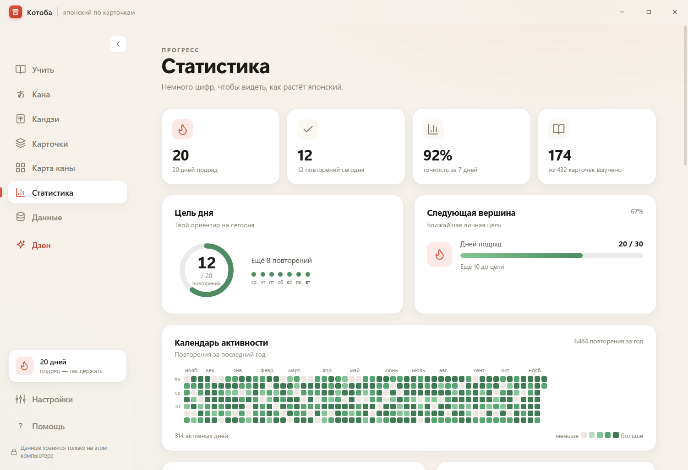
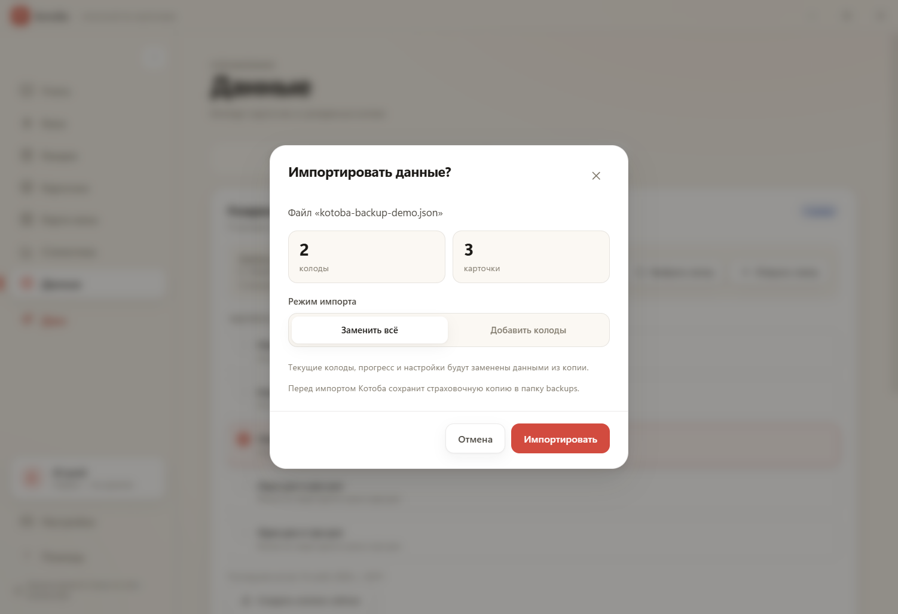

Всё локально
Колоды, прогресс и история — в обычных файлах на вашем компьютере.
Настольное приложение для японского
Хирагана, катакана, кандзи N5 и N4, свои колоды и тихие повторения. Всё работает офлайн и остаётся на вашем компьютере.

Небольшое приложение с уважением к вашему времени
Котоба не торопит. Она показывает карточку, ждёт вашего ответа и возвращается тогда, когда пора повторить. Без лент, уведомлений и спешки.
Колоды, прогресс и история — в обычных файлах на вашем компьютере.
Шрифты и данные уже внутри. Сеть нужна только для проверки обновлений.
Дневная цель, новые карточки порциями, паузы и режим «Дзен».
01 · Учёба
В режиме чтения карточка показывает японскую сторону. Вы вспоминаете чтение и значение, переворачиваете её и выбираете, насколько легко было. «Снова» вернёт карточку через несколько карточек, «Хорошо» — через дни. Новые слова приходят небольшими порциями.

каждая карточка возвращается вовремя
02 · Кана и кандзи
Внутри — хирагана и катакана, кандзи N5 и N4. У каждого знака есть чтение, значение и примеры. На карте каны видно, что уже знакомо, что ждёт повторения, а что ещё впереди.

один знак — целая история

100 из 142 знаков уже знакомы. Красные — ждут повторения, светлые — ещё впереди.
03 · Свои колоды
Создайте колоду под учебник, поездку или любимую песню. Добавляйте слова, чтения, переводы, заметки и теги. На экране «Карточки» можно искать, фильтровать, переносить карточки между колодами и отмечать то, что вы уже знаете.

всё на своих местах
04 · Два режима
В режиме чтения вы видите японский текст и вспоминаете чтение и смысл. В режиме письма — наоборот: перед вами значение, а японское слово вы пишете сами. Сложность письма можно настроить: с подсказкой или без.
Нормальный режим письма показывает транскрипцию; сложный оставляет только значение — и вы вспоминаете всё сами.
05 · Дзен
Полноэкранный режим без интерфейса. Карточка показывает японскую сторону, через десять секунд переворачивается, ещё через десять — растворяется и уступает место следующей. Можно запустить вручную или позволить Котобе включить его после бездействия.
Esc — выйти и вернуться к обычному экрану.

тишина между карточками
06 · Статистика
Серия дней, точность, календарь активности, прогноз и прогресс по колодам. Не для соревнования — чтобы замечать, как меняется ваша память, и вовремя снижать темп.

маленькие шаги складываются в путь
07 · Ваши данные
Котоба хранит всё в обычных JSON-файлах на вашем компьютере. Резервные копии можно делать вручную или по расписанию, а если файл повредился — приложение предложит восстановиться и не станет молча заменять данные.

сначала проверить, потом импортировать
.bak, если файл повреждён08 · Мелочи
Небольшие детали, которые помогают заниматься каждый день.
Светлая, тёмная или системная — на ваш выбор.
Интерфейс переключается в настройках.
Японский текст читается системным голосом.
Карточки из таблицы — без ручного переноса.
Space, 1–4, Ctrl+Z, Esc.
Проверка при запуске и из настроек. Без автозагрузки.
Девять пошаговых руководств — от каны до резервных копий.
Повторения, минуты, серия дней и личные ориентиры.
Утром — десять карточек за чашкой чая. Вечером — ошибки, которые стоит повторить. Между ними — обычная жизнь.
Котоба не просит внимания. Она ждёт, когда вы вернётесь.
Скачать
Бесплатно, офлайн, без аккаунта. Установщик для Windows x64.
Установщик не подписан — Windows SmartScreen может показать предупреждение. Данные и настройки сохраняются при обновлении.